Contents
practica 1: Señales en tiempo continuo
% integrantes % Chavez Andrade Luis Daniel
Objetivos
- Manipulacion basica de MATLAB
- Gráficas de señales reales y complejas continuas
Matlab
Introduccion MATLAB (abreviatura de MATrix LABoratory, «laboratorio de matrices») es un sistema de cómputo numérico que ofrece un entorno de desarrollo integrado (IDE) con un lenguaje de programación propio (lenguaje M). Está disponible para las plataformas Unix, Windows, macOS y GNU/Linux. Entre sus prestaciones básicas se hallan la manipulación de matrices, la representación de datos y funciones, la implementación de algoritmos, la creación de interfaces de usuario (GUI) y la comunicación con programas en otros lenguajes y con otros dispositivos hardware. El paquete MATLAB dispone de dos herramientas adicionales que expanden sus prestaciones, a saber, Simulink (plataforma de simulación multidominio) y GUIDE (editor de interfaces de usuario - GUI). Además, se pueden ampliar las capacidades de MATLAB con las cajas de herramientas (toolboxes); y las de Simulink con los paquetes de bloques (blocksets).
%Es un software muy usado en universidades y centros de investigación y desarrollo. %En los últimos años ha aumentado el número de prestaciones, como la de programar directamente procesadores %digitales de señal o crear código VHDL. %En 2004, se estimaba que MATLAB era empleado por más de un millón de personas %en ámbitos académicos y empresariales
Problema 1
f = @(t1) exp(-t1).*cos(2*pi*t1) t1=-2:2; mifigura(t1,f(t1)) t1=-2:.01:2; mifigura(t1,f(t1)) u=@(t) (t>=0) t = (-2:2); mifigura(t,u(t)); t = (-2:0.01:2); mifigura(t,u(t)); p=@(t) (t>=0)&(t<1),t; t = (-1:0.01:2); mifigura(t,p(t));
f =
function_handle with value:
@(t1)exp(-t1).*cos(2*pi*t1)
u =
function_handle with value:
@(t)(t>=0)
p =
function_handle with value:
@(t)(t>=0)&(t<1)
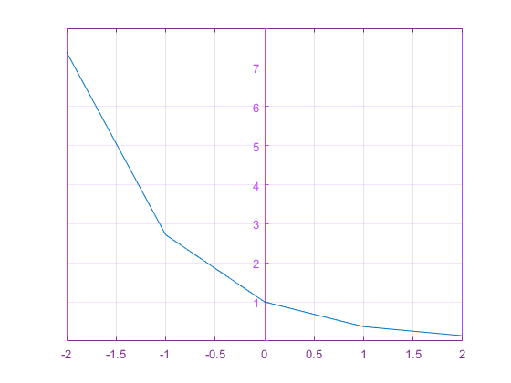 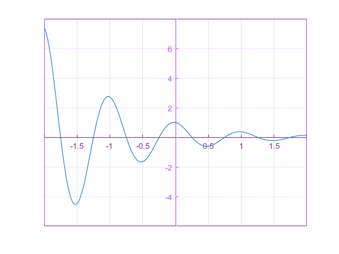 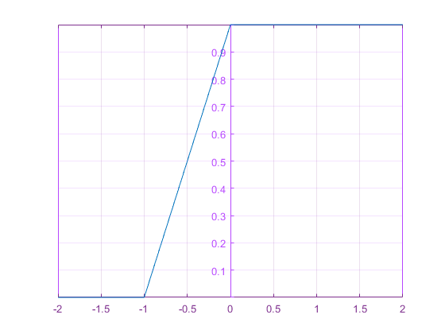 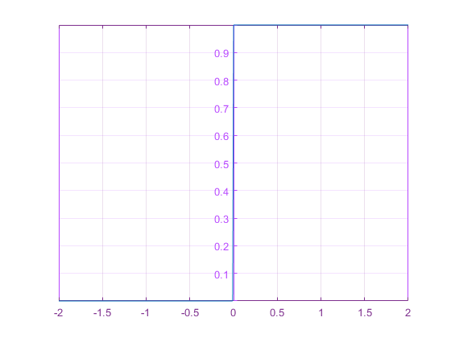 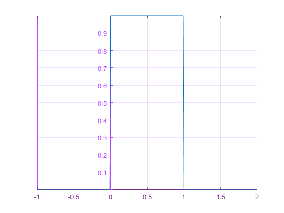 Problema 2
%esta es la señal a analizar x=@(t) (t).*((t<=2)&(t>=0))+(-t).*((t>=-4)&(t<=0)); t=-4:.01:4; mifigura(t,x(t)); %le vamos a aplicar las siguientes transformaciones x(t/1.5) x=@(t) (t).*((t<=2)&(t>=0))+(-t).*((t>=-4)&(t<=0)); t=-4:.01:4; mifigura(t,(1.5*x(t))); %le vamos a aplicar las siguientes transformaciones x(-t) x=@(t) (t).*((t<=2)&(t>=0))+(-t).*((t>=-4)&(t<=0)); t=-4:.01:4; mifigura(t,(x(-t))); %le vamos a aplicar las siguientes transformaciones x(2t-4)%%%%%%%%%%%%%%% x=@(t) ((t).*((t<=2)&(t>=0))+(-t).*((t>=-4)&(t<=0))); t=-4:.01:4; mifigura(t,((.5*x(t)))); %le vamos a aplicar las siguientes transformaciones x(2-t)%%%%%%%%%%%%%%%% x=@(t) (t).*((t<=2)&(t>=0))+(-t).*((t>=-4)&(t<=0)); t=-4:.01:4; mifigura(t,(1.5*x(t)));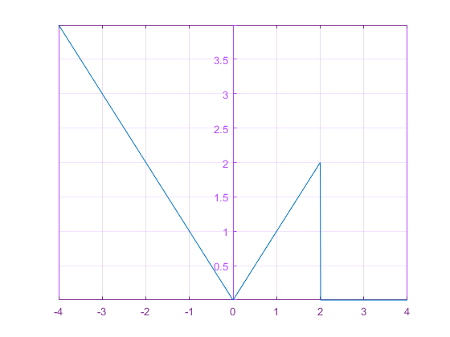 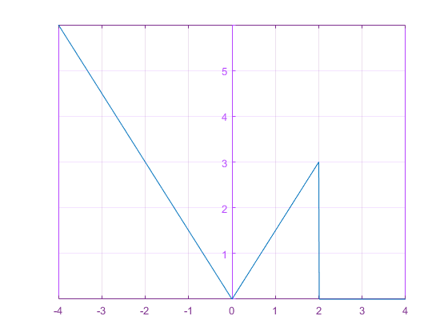 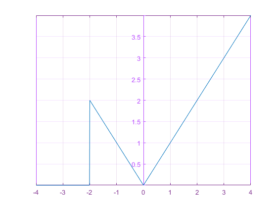 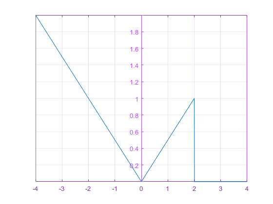
problema 3
a=1/2; f=@(t) exp(-a*t).*(t>=0); t=-1:.1:5; mifigura(t,f(t)); mifigura(t,abs(f(t))); %te^-at*u(t) a=1/2; f=@(t) t.*exp(-a*t).*(t>=0); t=-1:.1:5; mifigura(t,f(t)); %t^n*e^-at*u(t) f=@(t) t.^2.*exp(-a*t).*(t>=0); t=-1:.1:5; mifigura(t,f(t));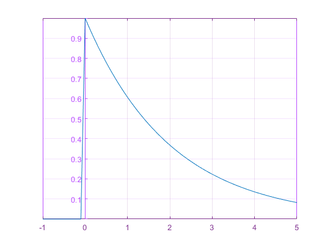 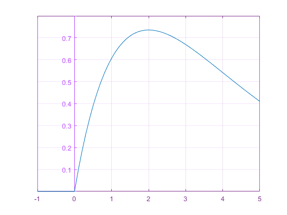 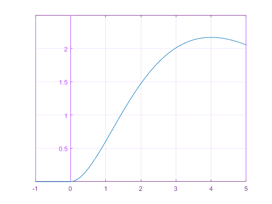
Problema 4
Transformada de fourier
w=-10:.01:10; f=@(w) (1./(j*w+.5)); figure plot3(w,real(f(w)),imag(f(w))); %F(t)=(1/(jw+a)^2) w=-10:.01:10; f=@(w) (1./(j*w+5).^2); figure plot3(w,real(f(w)),imag(f(w))); %F(t)=(n!/(jw+a)^n+1) w=-10:.01:10; f=@(w) (factorial(2)./(j*w+5).^3); figure plot3(w,real(f(w)),imag(f(w)));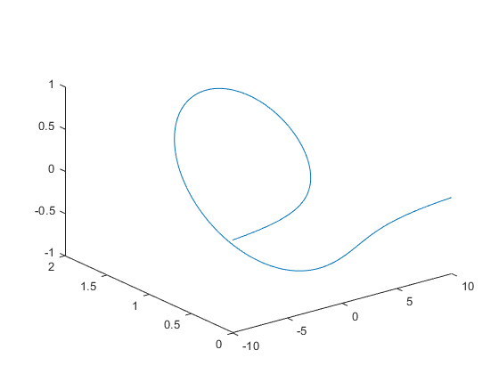 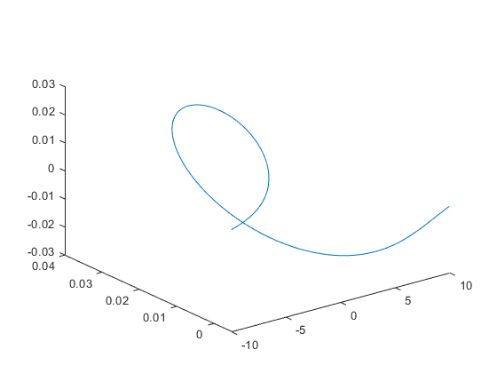 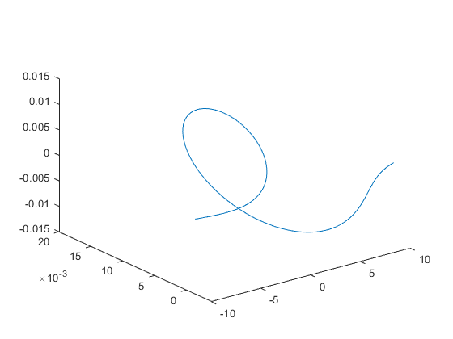